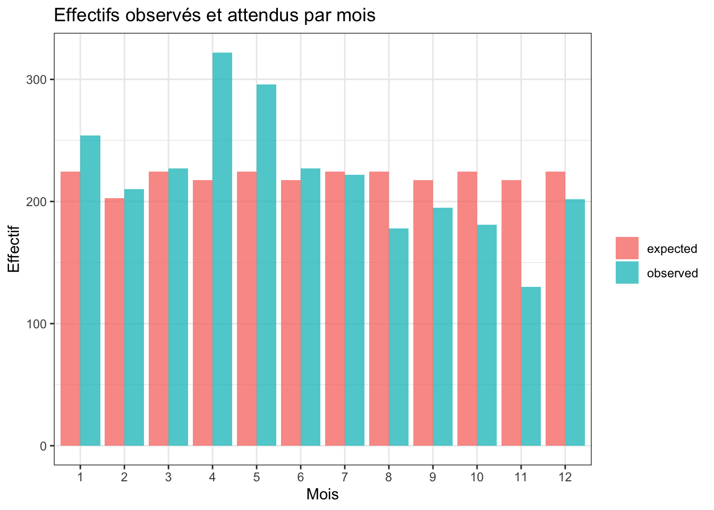
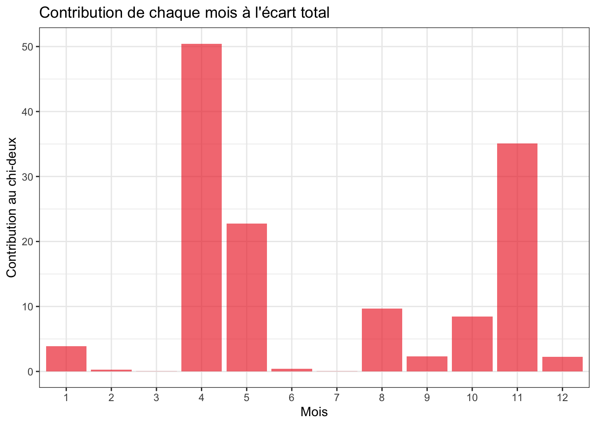
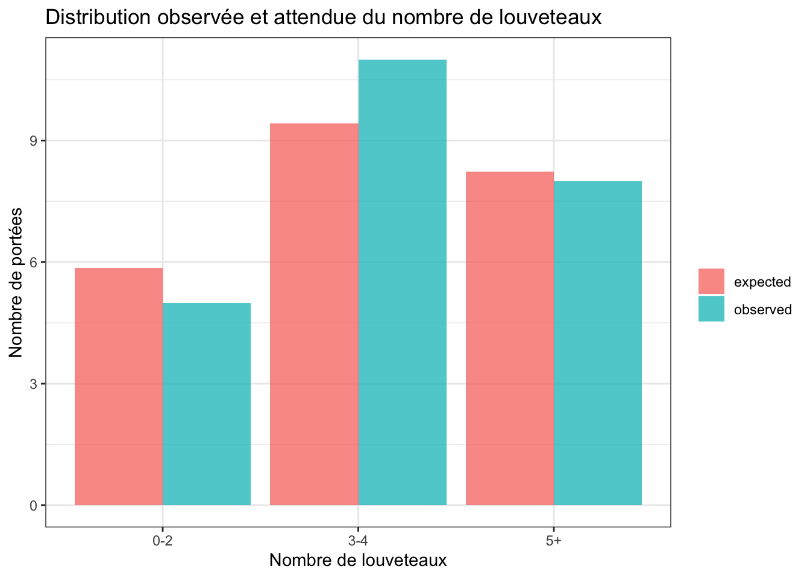

library(tidyverse)
library(skimr)
library(janitor)WORK IN PROGRESS!!! DON’T TAKE ANYTHING IN HERE FOR GRANTED. THIS CHAPTER IS STILL UNDER CONSTRUCTION.
16.1 Pré-requis
Comme pour chaque nouveau chapitre, je vous conseille de travailler dans un nouveau script que vous placerez dans votre répertoire de travail, et dans une nouvelle session de travail (Menu Session > Restart R). Inutile en revanche de créer un nouveau Rproject : vous pouvez tout à fait avoir plusieurs scripts dans le même répertoire de travail et pour un même Rproject. Comme toujours, consultez les chapitres précédents (en particulier les sections 1.3.2 et 1.3.3) si vous ne savez plus comment faire.
Si vous êtes dans une nouvelle session de travail (ou que vous avez quitté puis relancé RStudio), vous devrez penser à recharger en mémoire les packages utiles. Dans ce chapitre, vous aurez besoin d’utiliser :
- le
tidyverse(Wickham 2023), qui comprend notammentreadr(Wickham, Hester, et Bryan 2026),dplyr(Wickham, François, et al. 2026),tidyr(Wickham, Vaughan, et Girlich 2025) etggplot2(Wickham, Chang, et al. 2026) ; skimr(Waring et al. 2026), qui permet de calculer des résumés de données très informatifs ;janitor(Firke 2024), pour nettoyer facilement les noms de variables d’un tableau.
Vous aurez également besoin des jeux de données suivants que vous pouvez dès maintenant télécharger dans votre répertoire de travail :
Enfin, je spécifie ici une fois pour toutes le thème que j’utiliserai pour tous les graphiques de ce chapitre. Libre à vous de choisir un thème différent ou de vous contenter du thème proposé par défaut :
theme_set(theme_bw())16.2 Contexte
Dans le chapitre précédent, nous avons comparé des proportions. Dans le cas le plus simple, la variable étudiée ne possède que deux modalités : succès / échec, femelle / mâle, vivant / mort, présent / absent, etc. Le test binomial permet alors de comparer une proportion observée à une valeur théorique, et prop.test() permet de comparer deux proportions.
Mais de nombreuses questions ne se résument pas à deux catégories. On peut vouloir savoir si :
- les observations sont réparties de façon équilibrée entre plusieurs catégories ;
- une distribution observée correspond à une distribution théorique connue ;
- des comptages suivent une loi binomiale ou une loi de Poisson ;
- les écarts entre effectifs observés et effectifs attendus sont compatibles avec les fluctuations d’échantillonnage.
Dans ce chapitre, nous allons donc passer d’une proportion isolée à une distribution de fréquences entière.
L’idée générale reste pourtant très proche de celle du chapitre précédent. Il faut toujours comparer ce que l’on observe à ce que l’on aurait attendu si l’hypothèse nulle était vraie. La différence, c’est que cette comparaison ne porte plus sur une seule proportion, mais sur plusieurs effectifs simultanément.
À retenir !
Un test de qualité de l’ajustement compare une distribution observée d’effectifs à une distribution attendue sous un modèle théorique.
Le raisonnement est toujours le même :
- définir clairement le modèle attendu sous H\(_0\) ;
- calculer les effectifs observés ;
- calculer les effectifs attendus ;
- mesurer l’écart entre observé et attendu ;
- décider si cet écart est compatible avec les fluctuations d’échantillonnage.
16.3 Importation et mise en forme des données
Nous allons commencer avec le jeu de données squid.txt, déjà utilisé au chapitre précédent. Pour rappel, ce fichier contient des données sur des calmars échantillonnés dans plusieurs sites. Les variables disponibles sont :
Sample: identifiant de l’observation ;YearetMonth: date de collecte ;Location: site d’échantillonnage ;Sex: sexe de l’individu ;GSI: gonado-somatic index.
Nous allons importer les données, nettoyer les noms de variables, puis transformer certaines colonnes en facteurs :
squid <- read_tsv("data/squid.txt", show_col_types = FALSE) |>
clean_names() |>
mutate(
location = factor(location),
month = factor(month, levels = 1:12),
sex = factor(sex, labels = c("male", "female")),
female = sex == "female"
)
squid# A tibble: 2,644 × 7
sample year month location sex gsi female
<dbl> <dbl> <fct> <fct> <fct> <dbl> <lgl>
1 1 1 1 1 female 10.4 TRUE
2 2 1 1 3 female 9.83 TRUE
3 3 1 1 1 female 9.74 TRUE
4 4 1 1 1 female 9.31 TRUE
5 5 1 1 1 female 8.99 TRUE
6 6 1 1 1 female 8.77 TRUE
7 7 1 1 1 female 8.26 TRUE
8 8 1 1 3 female 7.40 TRUE
9 9 1 1 3 female 7.22 TRUE
10 10 1 2 1 female 6.84 TRUE
# ℹ 2,634 more rowsComme dans le chapitre précédent, nous disposons d’un tableau au format long :
- chaque ligne correspond à un individu ;
- les variables
month,locationetsexsont qualitatives ; - la variable
femalecode le sexe sous forme binaire.
Ce format est important. Même quand le test statistique travaille finalement sur des effectifs agrégés, il est préférable de partir des données individuelles quand elles sont disponibles. Cela permet de contrôler la structure du tableau, les valeurs manquantes, les regroupements éventuels et le sens biologique des catégories.
16.4 Le modèle proportionnel
Le modèle de probabilité le plus simple est le modèle proportionnel. Dans ce modèle, la fréquence attendue d’un événement est proportionnelle au nombre d’occasions qu’il avait de se produire.
Par exemple, si les calmars étaient échantillonnés au hasard tout au long de l’année, et avec un effort d’échantillonnage identique chaque jour, on ne devrait pas attendre exactement le même nombre d’individus dans chaque mois. Les mois n’ont pas tous la même durée. Il serait donc plus logique d’attendre un nombre d’individus proportionnel au nombre de jours de chaque mois.
Cette hypothèse est volontairement simple. Elle ne tient pas compte de la biologie de l’espèce, ni de la disponibilité réelle des calmars, ni de l’effort d’échantillonnage des observateurs. Elle nous servira ici de modèle nul.
Les hypothèses testées sont :
- H\(_0\) : les effectifs mensuels sont proportionnels au nombre de jours de chaque mois.
- H\(_1\) : les effectifs mensuels ne sont pas proportionnels au nombre de jours de chaque mois.
Commençons par calculer les effectifs observés par mois :
monthly_counts <- squid |>
count(month, .drop = FALSE)
monthly_counts# A tibble: 12 × 2
month n
<fct> <int>
1 1 254
2 2 210
3 3 227
4 4 322
5 5 296
6 6 227
7 7 222
8 8 178
9 9 195
10 10 181
11 11 130
12 12 202Pour calculer les effectifs attendus, il faut d’abord préciser les proportions attendues sous H\(_0\). Ici, elles sont simplement proportionnelles au nombre de jours de chaque mois :
month_days <- tibble(
month = factor(1:12, levels = 1:12),
days = c(31, 28, 31, 30, 31, 30, 31, 31, 30, 31, 30, 31)
) |>
mutate(expected_prop = days / sum(days))
month_days# A tibble: 12 × 3
month days expected_prop
<fct> <dbl> <dbl>
1 1 31 0.0849
2 2 28 0.0767
3 3 31 0.0849
4 4 30 0.0822
5 5 31 0.0849
6 6 30 0.0822
7 7 31 0.0849
8 8 31 0.0849
9 9 30 0.0822
10 10 31 0.0849
11 11 30 0.0822
12 12 31 0.0849Nous pouvons maintenant réunir les effectifs observés et attendus dans un même tableau :
monthly_fit <- monthly_counts |>
left_join(month_days, by = "month") |>
mutate(
expected = sum(n) * expected_prop,
difference = n - expected,
contribution = (n - expected)^2 / expected
)
monthly_fit# A tibble: 12 × 7
month n days expected_prop expected difference contribution
<fct> <int> <dbl> <dbl> <dbl> <dbl> <dbl>
1 1 254 31 0.0849 225. 29.4 3.86
2 2 210 28 0.0767 203. 7.17 0.254
3 3 227 31 0.0849 225. 2.44 0.0265
4 4 322 30 0.0822 217. 105. 50.4
5 5 296 31 0.0849 225. 71.4 22.7
6 6 227 30 0.0822 217. 9.68 0.432
7 7 222 31 0.0849 225. -2.56 0.0292
8 8 178 31 0.0849 225. -46.6 9.65
9 9 195 30 0.0822 217. -22.3 2.29
10 10 181 31 0.0849 225. -43.6 8.45
11 11 130 30 0.0822 217. -87.3 35.1
12 12 202 31 0.0849 225. -22.6 2.27 La colonne expected indique le nombre de calmars que l’on aurait attendu dans chaque mois si l’hypothèse nulle était vraie. La colonne difference indique l’écart entre l’effectif observé et l’effectif attendu. Enfin, la colonne contribution indique la contribution de chaque mois à la statistique du \(\chi^2\).
16.5 Exploration graphique
Avant de réaliser le test, il est toujours utile de représenter les effectifs observés et attendus. Cela permet d’identifier les catégories qui contribuent le plus à l’écart global.
monthly_fit |>
select(month, observed = n, expected) |>
pivot_longer(
cols = c(observed, expected),
names_to = "type",
values_to = "count"
) |>
ggplot(aes(x = month, y = count, fill = type)) +
geom_col(position = "dodge", alpha = 0.75) +
labs(
x = "Mois",
y = "Effectif",
fill = "",
title = "Effectifs observés et attendus par mois"
)
On voit que certains mois s’écartent fortement du modèle proportionnel. Les mois d’avril et mai présentent davantage de calmars que prévu, alors que novembre en présente beaucoup moins. Le graphique ne constitue pas un test, mais il permet déjà de comprendre d’où viendra l’essentiel de la statistique de test.
On peut aussi représenter les contributions au \(\chi^2\) :
monthly_fit |>
ggplot(aes(x = month, y = contribution)) +
geom_col(fill = "firebrick2", alpha = 0.65) +
labs(
x = "Mois",
y = "Contribution au chi-deux",
title = "Contribution de chaque mois à l'écart total"
)
Ce graphique rappelle qu’un test du \(\chi^2\) de qualité de l’ajustement ne se contente pas de dire si l’écart global est significatif. Il permet aussi d’identifier les catégories qui expliquent le mieux cet écart.
16.6 Le test du chi-deux de qualité de l’ajustement
Le test du \(\chi^2\) de qualité de l’ajustement compare des effectifs observés à des effectifs attendus sous l’hypothèse nulle.
La statistique de test est :
\[\chi^2 = \sum_i \frac{(\textrm{Observé}_i - \textrm{Attendu}_i)^2}{\textrm{Attendu}_i}\]
Dans cette formule, \(i\) désigne les différentes catégories. Ici, les catégories sont les douze mois de l’année.
Plus la valeur de \(\chi^2\) est grande, plus l’écart entre les effectifs observés et attendus est important. La p-value indique ensuite si un écart au moins aussi grand serait plausible si l’hypothèse nulle était vraie.
Dans R, le test se réalise avec la fonction chisq.test(). Comme le package janitor possède également une fonction nommée chisq.test(), nous allons appeler explicitement la fonction du package stats, qui est chargé automatiquement avec R :
test_month <- stats::chisq.test(
x = monthly_fit$n,
p = monthly_fit$expected_prop
)
test_month
Chi-squared test for given probabilities
data: monthly_fit$n
X-squared = 135.5, df = 11, p-value < 2.2e-16Ici, la p-value est très petite. On rejette donc l’hypothèse nulle : la répartition mensuelle des calmars échantillonnés n’est pas compatible avec une répartition simplement proportionnelle au nombre de jours des mois.
Cela ne signifie pas que le mois a nécessairement un effet biologique direct sur la présence des calmars. C’est une conclusion importante. Le test nous dit seulement que le modèle nul proposé ne décrit pas correctement les effectifs observés. L’écart peut venir de la biologie de l’espèce, de la saison de reproduction, de l’effort d’échantillonnage, de la disponibilité des individus, ou de plusieurs de ces facteurs à la fois.
Attention
Un test de qualité de l’ajustement ne teste jamais “si les données sont intéressantes”. Il teste toujours l’ajustement à un modèle précis.
Si le modèle nul est mal choisi, la p-value peut être très petite sans que l’interprétation biologique soit claire.
16.7 Conditions d’application
Le test du \(\chi^2\) repose sur une approximation. Pour que cette approximation soit correcte, les effectifs attendus ne doivent pas être trop faibles. Les règles usuelles sont les suivantes :
- aucun effectif attendu ne devrait être inférieur à 1 ;
- pas plus de 20 % des effectifs attendus ne devraient être inférieurs à 5.
Dans notre exemple, on peut examiner les effectifs attendus directement :
monthly_fit |>
select(month, expected)# A tibble: 12 × 2
month expected
<fct> <dbl>
1 1 225.
2 2 203.
3 3 225.
4 4 217.
5 5 225.
6 6 217.
7 7 225.
8 8 225.
9 9 217.
10 10 225.
11 11 217.
12 12 225.Ici, tous les effectifs attendus sont largement supérieurs à 5. Les conditions d’application du test sont donc satisfaites.
16.8 Magnitude de l’effet
Comme toujours, la p-value ne mesure pas la taille de l’effet. Elle indique si les données sont compatibles avec l’hypothèse nulle, pas si l’écart observé est biologiquement important.
Pour évaluer la magnitude de l’écart, on peut regarder :
- les différences entre effectifs observés et attendus ;
- les contributions au \(\chi^2\) ;
- une mesure globale comme le \(V\) de Cramer.
Dans le cas d’un test de qualité de l’ajustement, le \(V\) de Cramer peut être calculé ainsi :
\[V = \sqrt{\frac{\chi^2}{n(k-1)}}\]
où \(n\) est l’effectif total et \(k\) le nombre de catégories.
cramer_v_month <- sqrt(
unname(test_month$statistic) /
(sum(monthly_fit$n) * (nrow(monthly_fit) - 1))
)
cramer_v_month[1] 0.06825642Ici, la valeur de \(V\) reste modérée. Cela illustre un point très général : avec un grand échantillon, un écart peut être statistiquement très net tout en restant d’une magnitude raisonnable. L’interprétation doit donc s’appuyer à la fois sur le test, les effectifs observés, les effectifs attendus et la taille d’effet.
16.9 Le cas de deux catégories
Le test du \(\chi^2\) de qualité de l’ajustement fonctionne aussi avec seulement deux catégories. Dans ce cas, il devient très proche du test binomial vu au chapitre précédent.
Reprenons la variable sex du jeu de données squid. Si l’on souhaite tester si la proportion globale de femelles diffère de 50 %, on peut écrire les hypothèses suivantes :
- H\(_0\) : les mâles et les femelles sont également fréquents dans la population.
- H\(_1\) : les mâles et les femelles ne sont pas également fréquents dans la population.
Commençons par les effectifs :
sex_counts <- squid |>
count(sex)
sex_counts# A tibble: 2 × 2
sex n
<fct> <int>
1 male 1402
2 female 1242Le test du \(\chi^2\) de qualité de l’ajustement s’écrit :
stats::chisq.test(
x = sex_counts$n,
p = c(0.5, 0.5)
)
Chi-squared test for given probabilities
data: sex_counts$n
X-squared = 9.6823, df = 1, p-value = 0.001861On peut comparer ce résultat à celui du test binomial exact :
stats::binom.test(
x = sum(squid$female),
n = nrow(squid),
p = 0.5
)
Exact binomial test
data: sum(squid$female) and nrow(squid)
number of successes = 1242, number of trials = 2644, p-value = 0.001981
alternative hypothesis: true probability of success is not equal to 0.5
95 percent confidence interval:
0.4505726 0.4889801
sample estimates:
probability of success
0.4697428 Les deux tests conduisent ici à la même conclusion : la proportion de femelles est significativement différente de 50 %. La proportion observée vaut :
mean(squid$female)[1] 0.4697428La proportion de femelles est donc d’environ 47 %. L’écart à 50 % est statistiquement significatif, mais il reste modeste en magnitude. L’intervalle de confiance fourni par binom.test() est donc indispensable pour interpréter correctement le résultat.
À retenir !
Avec seulement deux catégories, le test du \(\chi^2\) de qualité de l’ajustement et le test binomial répondent à une question très proche.
En pratique, si la question porte sur une proportion unique et que vous disposez d’un ordinateur, binom.test() reste souvent préférable : il fournit un test exact et un intervalle de confiance directement interprétable.
16.10 Ajustement à une loi de Poisson
Le test de qualité de l’ajustement ne sert pas seulement à comparer des effectifs observés à des proportions théoriques fixées à l’avance. Il permet aussi de tester si des données de comptage suivent une distribution de probabilité particulière.
La loi de Poisson est particulièrement importante pour les variables de comptage. Elle peut décrire le nombre d’événements observés dans une unité d’espace ou de temps lorsque :
- les événements sont indépendants les uns des autres ;
- la probabilité d’un événement est constante dans l’espace ou dans le temps ;
- les événements ne se regroupent pas en paquets.
Nous allons utiliser le fichier loups.csv, qui contient des données sur le nombre de louveteaux observés dans différentes portées. Les variables disponibles sont :
inbreedCoef: coefficient de consanguinité ;nPups: nombre de louveteaux dans la portée.
wolves <- read_csv("data/loups.csv", show_col_types = FALSE)
wolves# A tibble: 24 × 2
inbreedCoef nPups
<dbl> <dbl>
1 0 6
2 0 6
3 0.13 7
4 0.13 5
5 0.13 4
6 0.19 8
7 0.19 7
8 0.19 4
9 0.25 6
10 0.24 3
# ℹ 14 more rowsIci, nous allons nous concentrer uniquement sur nPups, c’est-à-dire sur le nombre de louveteaux par portée. La question posée est la suivante : la distribution observée du nombre de louveteaux par portée est-elle compatible avec une loi de Poisson ?
Les hypothèses sont donc :
- H\(_0\) : le nombre de louveteaux par portée suit une loi de Poisson.
- H\(_1\) : le nombre de louveteaux par portée ne suit pas une loi de Poisson.
Commençons par quelques statistiques descriptives :
wolves |>
summarise(
n = n(),
mean_pups = mean(nPups),
var_pups = var(nPups),
ratio_var_mean = var(nPups) / mean(nPups)
)# A tibble: 1 × 4
n mean_pups var_pups ratio_var_mean
<int> <dbl> <dbl> <dbl>
1 24 3.96 3.52 0.889Pour une loi de Poisson, la moyenne et la variance sont égales. Le rapport variance / moyenne donne donc une première indication :
- s’il est proche de 1, la distribution est compatible avec une loi de Poisson ;
- s’il est nettement supérieur à 1, les données sont plus agrégées que prévu ;
- s’il est nettement inférieur à 1, les données sont plus régulières que prévu.
Ici, ce rapport est proche de 1, ce qui suggère que la loi de Poisson n’est pas une hypothèse absurde. Mais ce n’est qu’un examen descriptif. Il faut maintenant comparer les effectifs observés et attendus.
pup_counts <- wolves |>
count(nPups, name = "observed") |>
complete(nPups = 0:max(nPups), fill = list(observed = 0))
pup_counts# A tibble: 9 × 2
nPups observed
<dbl> <int>
1 0 0
2 1 1
3 2 4
4 3 8
5 4 3
6 5 2
7 6 3
8 7 2
9 8 1Pour calculer les effectifs attendus sous une loi de Poisson, nous devons connaître le paramètre de cette loi. Pour une loi de Poisson, ce paramètre est la moyenne, souvent notée \(\lambda\). Comme il n’est pas connu, nous allons l’estimer à partir des données :
lambda_pups <- mean(wolves$nPups)
lambda_pups[1] 3.958333Nous pouvons maintenant calculer les probabilités attendues grâce à la fonction dpois() :
pup_fit <- pup_counts |>
mutate(
expected_prob = dpois(nPups, lambda = lambda_pups),
expected = nrow(wolves) * expected_prob
)
pup_fit# A tibble: 9 × 4
nPups observed expected_prob expected
<dbl> <int> <dbl> <dbl>
1 0 0 0.0191 0.458
2 1 1 0.0756 1.81
3 2 4 0.150 3.59
4 3 8 0.197 4.74
5 4 3 0.195 4.69
6 5 2 0.155 3.71
7 6 3 0.102 2.45
8 7 2 0.0577 1.38
9 8 1 0.0285 0.685Les effectifs attendus sont faibles pour plusieurs valeurs du nombre de louveteaux. Si l’on utilisait directement toutes les catégories, les conditions d’application du test du \(\chi^2\) ne seraient pas bien respectées. Dans ce cas, une solution classique consiste à regrouper des catégories voisines, à condition que ce regroupement ait du sens.
Ici, nous allons distinguer les portées petites (0-2 louveteaux), intermédiaires (3-4 louveteaux), et grandes (5+ louveteaux) :
pup_fit_grouped <- pup_fit |>
mutate(
class = case_when(
nPups <= 2 ~ "0-2",
nPups <= 4 ~ "3-4",
nPups >= 5 ~ "5+"
)
) |>
summarise(
observed = sum(observed),
expected = sum(expected),
.by = class
) |>
mutate(class = factor(class, levels = c("0-2", "3-4", "5+"))) |>
arrange(class)
pup_fit_grouped# A tibble: 3 × 3
class observed expected
<fct> <int> <dbl>
1 0-2 5 5.86
2 3-4 11 9.42
3 5+ 8 8.23La comparaison graphique est souvent la meilleure façon de comprendre le test :
pup_fit_grouped |>
pivot_longer(
cols = c(observed, expected),
names_to = "type",
values_to = "count"
) |>
ggplot(aes(x = class, y = count, fill = type)) +
geom_col(position = "dodge", alpha = 0.75) +
labs(
x = "Nombre de louveteaux",
y = "Nombre de portées",
fill = "",
title = "Distribution observée et attendue du nombre de louveteaux"
)
Les écarts entre effectifs observés et attendus semblent faibles. On peut maintenant réaliser le test. Comme nous avons estimé \(\lambda\) à partir des données, nous perdons un degré de liberté. La fonction chisq.test() ne le sait pas. Elle calcule donc une p-value avec un nombre de degrés de liberté trop grand. Nous allons utiliser la statistique du \(\chi^2\) renvoyée par le test, puis recalculer nous-mêmes la p-value avec le bon nombre de degrés de liberté.
test_pups <- stats::chisq.test(
x = pup_fit_grouped$observed,
p = pup_fit_grouped$expected / sum(pup_fit_grouped$expected)
)
test_pups
Chi-squared test for given probabilities
data: pup_fit_grouped$observed
X-squared = 0.37877, df = 2, p-value = 0.8275Le nombre correct de degrés de liberté est :
\[df = k - 1 - m\]
où \(k\) est le nombre de catégories après regroupement et \(m\) le nombre de paramètres estimés à partir des données. Ici, \(k = 3\) et \(m = 1\), car nous avons estimé \(\lambda\). On obtient donc :
df_pups <- nrow(pup_fit_grouped) - 1 - 1
df_pups[1] 1La p-value correcte est alors :
chi2_pups <- sum(
(pup_fit_grouped$observed - pup_fit_grouped$expected)^2 /
pup_fit_grouped$expected
)
1 - pchisq(chi2_pups, df = df_pups)[1] 0.5288993Ici, la p-value est grande. On ne rejette donc pas l’hypothèse nulle. La distribution du nombre de louveteaux par portée n’est pas significativement différente de celle attendue sous une loi de Poisson.
Cette conclusion doit toutefois rester prudente. L’échantillon ne contient que 24 portées, ce qui limite fortement la puissance du test. Ne pas rejeter H\(_0\) ne signifie donc pas que la loi de Poisson est vraie. Cela signifie seulement que, avec ces données, nous n’avons pas de preuve claire d’un écart à cette loi.
Estimation des paramètres et degrés de liberté
Quand les probabilités attendues sont entièrement fixées par l’hypothèse nulle, le nombre de degrés de liberté vaut :
\[df = k - 1\]
où \(k\) est le nombre de catégories.
Quand un ou plusieurs paramètres sont estimés à partir des données, il faut retirer un degré de liberté supplémentaire pour chaque paramètre estimé :
\[df = k - 1 - m\]
Cette correction est indispensable pour obtenir la bonne p-value.
16.12 Conclusion
Les tests de qualité de l’ajustement prolongent directement les tests sur proportions. Dans les deux cas, il s’agit de comparer des effectifs observés à des effectifs attendus sous un modèle nul.
La nouveauté de ce chapitre est que le modèle nul peut maintenant porter sur une distribution entière :
- distribution proportionnelle entre plusieurs catégories ;
- distribution binomiale ;
- distribution de Poisson ;
- plus généralement, toute distribution pour laquelle on peut calculer des probabilités attendues.
Comme toujours, le test ne suffit pas. Il faut aussi examiner les effectifs observés, les effectifs attendus, les contributions au \(\chi^2\), les conditions d’application, et la magnitude des écarts observés.
16.13 Exercices d’application
À partir du jeu de données
squid, testez si les effectifs de calmars sont répartis de façon égale entre les 12 mois de l’année. Comparez ce test avec le modèle proportionnel au nombre de jours des mois présenté dans ce chapitre.À partir du jeu de données
squid, réalisez un test du \(\chi^2\) de qualité de l’ajustement pour tester si les quatre sites d’échantillonnage contiennent les mêmes effectifs de calmars. Représentez les effectifs observés et attendus sur un graphique.Reprenez le jeu de données
loups.csv. Réalisez le test d’ajustement à une loi de Poisson sans regrouper les catégories. Examinez les effectifs attendus. Pourquoi ce test n’est-il pas satisfaisant ?Toujours avec
loups.csv, proposez un autre regroupement des nombres de louveteaux. Recalculez le test et comparez la conclusion à celle du chapitre.À partir du jeu de données
HornedLizards.csv, testez si les lézards vivants et tués par prédation sont également fréquents dans l’échantillon. Comparez les résultats dechisq.test()etbinom.test().
16.11 Comment choisir et interpréter un test de qualité de l’ajustement ?
On peut résumer les cas les plus fréquents de la façon suivante :
chisq.test(x, p = ...)binom.test(), ouchisq.test()si les effectifs sont grandsdpois(), puis test du \(\chi^2\)dbinom(), puis test du \(\chi^2\)Dans tous les cas, il faut examiner les données avant le test. En particulier :
Un test non significatif ne prouve pas que le modèle testé est vrai.
Il indique seulement que l’écart entre les données et le modèle n’est pas suffisamment grand pour rejeter l’hypothèse nulle, compte tenu de la taille de l’échantillon et des catégories utilisées.